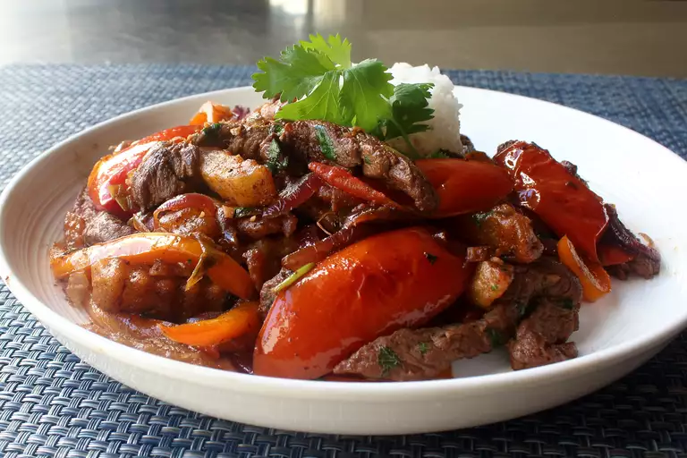

Lomo Saltado

Description
Lomo Saltado is a popular, traditional Peruvian Dish. It consist of stir fry made from marinated sirloin strips, onions, tomatoes, french fries, and other various ingredients.
Ingredients
- 1 (16 ounce) package frozen French fries
- 2 tablespoons vegetable oil
- 1 pound beef tri tip, sliced 1/8 to 1/4 inch thicks
- salt and pepper to taste
- 1 large onion, sliced into strips
- 3 large tomatoes, peeled, seeded, and sliced into strips
- 1 yellow chili pepper (preferably Peruvian aji amarillo)
- ¼ cup distilled white vinegar
- 1 dash soy sauce to taste
- 2 tablespoons chopped fresh parsley
Steps
- Slice beef horizontally into 1/4-inch strips and transfer into a mixing bowl. Add 1 tablespoon of soy sauce, and the sugar. Mix well and place in the refrigerator for at least 1 hour; longer is fine.
- Preheat an oven to 200 degrees F (90 degrees C). Line a sheet pan with a silicone liner (such as Silpat®).
- Heat 2 tablespoons olive oil in a large, nonstick skillet over medium-high heat. Add French fries and cook until golden and crisp, 5 to 7 minutes. Transfer to the prepared pan and place in the preheated oven to keep warm.
- Heat 2 tablespoons olive oil in the same skillet over high heat until the oil begins to smoke. Sear the beef strips in 2 or 3 smaller batches, until browned but still pink in places, for 1 to 2 minutes per batch. You don't want to cook the meat all the way through, as it will finish cooking with the vegetables later. As each batch of beef is browned, transfer to a plate or bowl, and reserve.
- Place the skillet back over high heat, and add remaining 2 tablespoons olive oil. Transfer in red onion, bell pepper, habanero, and green onion, along with a large pinch of salt. Cook, stirring, until the onions and peppers just begin to soften, 3 to 5 minutes.
- Add garlic and ginger to the pan; cook and stir for 1 minute. Add tomato wedges and cook, stirring, until they begin to soften and start to release their juices, about 3 minutes. Add remaining 2 tablespoons of soy sauce, white vinegar, and the browned beef into the pan, along with any accumulated juices, and stir to combine.
- Stir cilantro and crispy, cooked French fries into the pan, tossing everything to combine. Taste for salt and adjust if needed. Serve immediately.
Back to Front